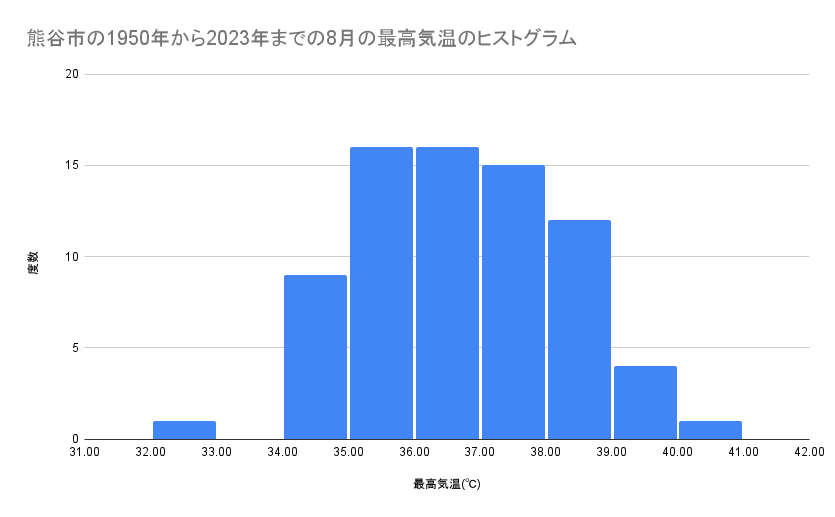
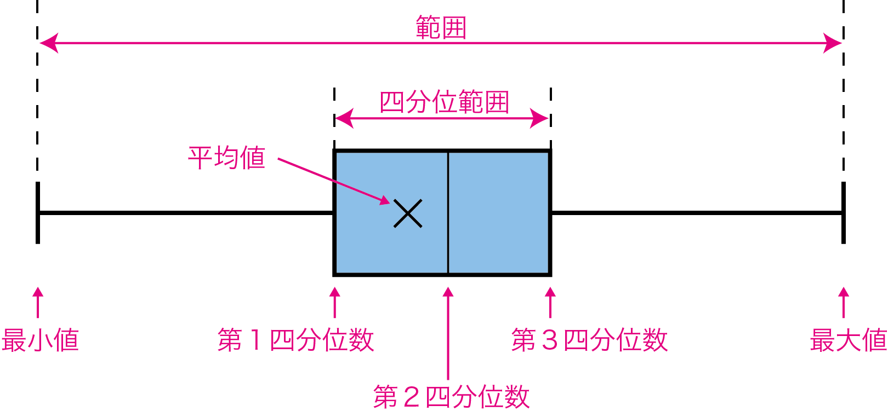
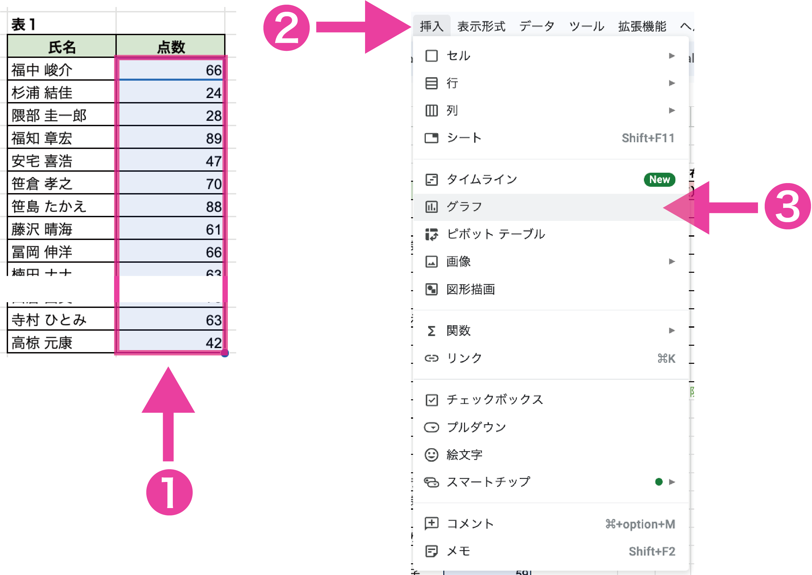
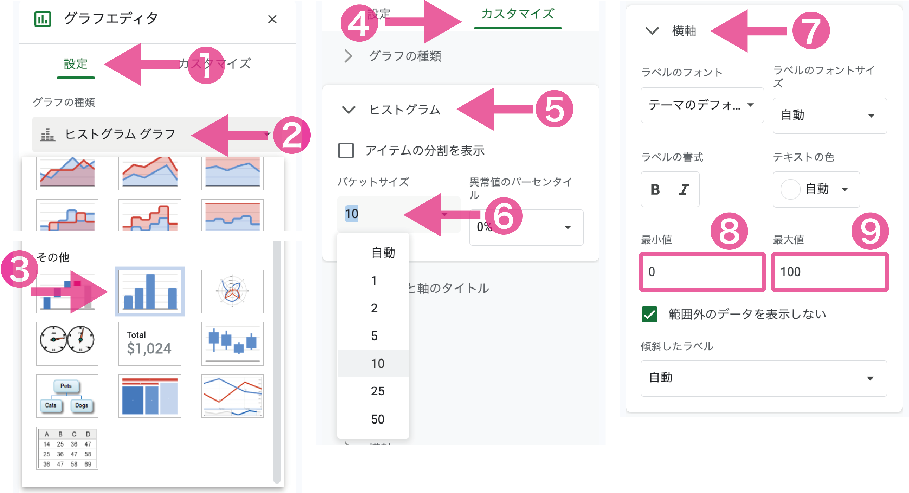
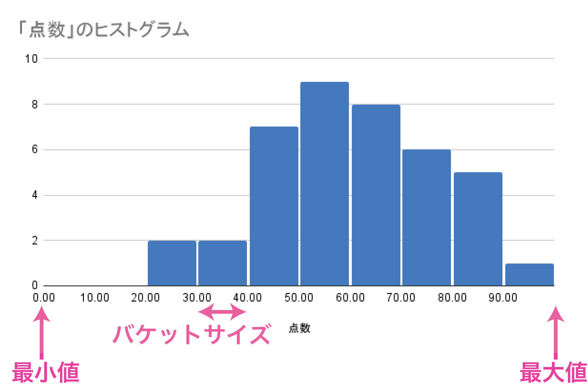
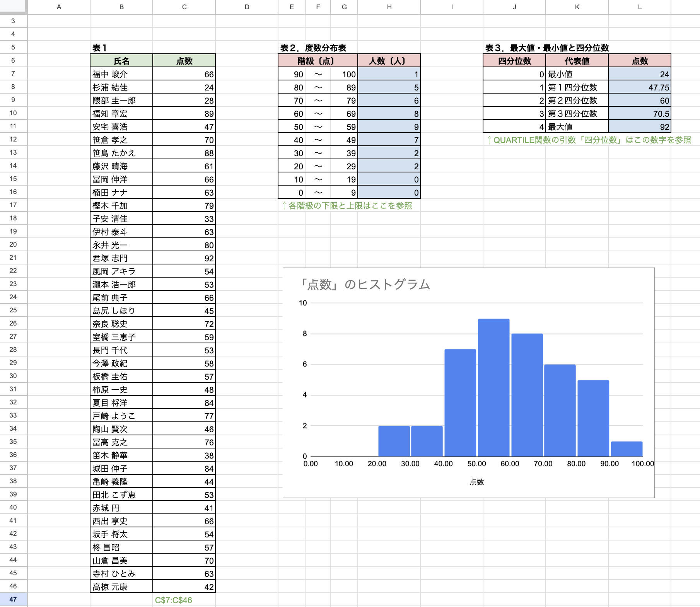

(1) 度数分布表とヒストグラム
度数分布表
データを階級ごとに集計した表を度数分布表といいます。また、度数分布表において、区切られた各区間を階級、区間の幅を階級幅、各階級に含まれる値の個数を度数、各階級の中央値を階級値といいます。
熊谷市の1950年から2023年までの8月の最高気温の度数分布表
| 階級 | 度数 |
|---|
| 41℃以上 42℃未満 | 0 |
|---|
| 40℃以上 41℃未満 | 1 |
|---|
| 39℃以上 40℃未満 | 4 |
|---|
| 38℃以上 39℃未満 | 12 |
|---|
| 37℃以上 38℃未満 | 15 |
|---|
| 36℃以上 37℃未満 | 16 |
|---|
| 35℃以上 36℃未満 | 16 |
|---|
| 34℃以上 35℃未満 | 9 |
|---|
| 33℃以上 34℃未満 | 0 |
|---|
| 32℃以上 33℃未満 | 1 |
|---|
| 31℃以上 32℃未満 | 0 |
|---|
| 30℃以上 31℃未満 | 0 |
|---|
スプレッドシートで度数を求めるときは、次のようにCOUNTIF関数またはCOUNTIFS関数を使います。
=COUNTIF(範囲, ">="&階級の下限値) - COUNTIF(範囲, ">"&階級の上限値)
=COUNTIFS(範囲, ">="&階級の下限値, 範囲, "<="&階級の上限値)
ヒストグラム
度数分布表を柱状のグラフであらわしたものをヒストグラムといいます。

階級幅について
階級幅を決めるときに、100点満点のテストなら階級幅は10点、30〜40℃の気温なら階級幅は1℃というように、キリのいい数字を使うと直感でわかりやすいヒストグラムを作成することができます。
しかし、キリのいい数字がわかりにくいようなデータの場合には、次のスタージェスの公式で求めた階級数が目安になるとされています。この公式では、データ数を$n$，階級数を$k$とすると、次のようになります。
\[k = 1 + \log_2n\]
(2) データの代表値と箱ひげ図
平均値（mean）
データの合計値を、データの個数で割った値を平均値といいます。
スプレッドシートで平均値を求めるときは、次のようにAVERAGE関数を使います。
=AVERAGE(範囲)
最大値（max）・最小値（minimum）
データにおいて、最も大きい値を最大値、最も小さい値を最小値といいます。
スプレッドシートで最大値と最小値を求めるときは、次のようにMAX関数とMIN関数を使います。
=MAX(範囲)
=MIN(範囲)
最頻値（mode）
データにおいて、最も度数の多い値を、そのデータの最頻値といいます。
スプレッドシートで最頻値を求めるときは、次のようにMODE関数を使います。
=MODE(範囲)
中央値（median）
データを降順（または昇順）に並べたとき、中央に位置するデータを中央値といいます。なお、データの数が偶数の場合は、中央に近い２つの値の平均値を中央値とします。
スプレッドシートで中央値を求めるときは、次のようにMEDIAN関数を使います。
=MEDIAN(範囲)
四分位数
データを降順（または昇順）に並べ、データの個数を４等分したとき、25%の区切りの値を第１四分位数 $Q_1$，50%区切りの値を第２四分位数 $Q_2$（＝中央値），75%区切りの値を第３四分位数 $Q_3$といいます。なお、中央値と同様に四分位数が決まらない場合は、近い２つの値の平均値を四分位数とします。
スプレッドシートで四分位数を求めるときは、次のようにQUARTILE関数を使います。
=QUARTILE(範囲, 四分位数)
第２引数の四分位数は0〜4の整数を次のように指定します。
- 四分位数に0を指定すると、データ内の最小値(0%)が返されます。
- 四分位数に1を指定すると、データ内の第１四分位数(25%)が返されます。
- 四分位数に2を指定すると、データ内の第２四分位数(50%)が返されます。
- 四分位数に3を指定すると、データ内の第３四分位数(75%)が返されます。
- 四分位数に4を指定すると、データ内の最大値(100%)が返されます。
四分位範囲
第１四分位数と第３四分位数の差を四分位範囲といいます。
箱ひげ図
四分位数や最大値・最小値を用いることで、データの散らばりを視覚的に表した図を箱ひげ図といいます。

(3) データの種類
データの種類
データには、数量で表すことができる量的データと名前や種類などの数量的な意味をもたない質的データに分類することができます。これらは、データの値を決めるときの基準である尺度の違いによって次のように分類することができます。このように、尺度によって分類する基準のことを尺度水準といいます。
質的データ
-
名義尺度
分類や区別をするための名称や、意味の違いを区別するために割り当てられた数字。
(例) 氏名，性別，血液型，好きな食べ物，正誤，有無，電話番号，背番号
-
順序尺度
数値の順序や大小関係を表す文字や数字。
(例) 服のサイズ，警報レベル，震度，おみくじの結果，グルメサイトなどの☆評価
カフェで飲み物を注文するときに、その名称で注文をする（名義尺度）。
1. 本日のコーヒー， 2. カフェラテ， 3. フラペチーノ
飲み物のサイズは大小関係を示すが、比例関係にはない： Short (240 mL), Tall (350 mL), Grande (470 mL) （順序尺度）
量的データ
-
間隔尺度
等間隔に並ぶ数値で、絶対的な原点（0となる点）がないもの。
「昨日は5℃で今日は10℃だから、5℃温かい」というように差には意味があるが、
「10℃は5℃の2倍温かい」という比較は適切でない（絶対温度ではないため）。
(例) 西暦，元号，気温（摂氏），日付
-
比例尺度（比率尺度）
等間隔に並ぶ数値で、絶対的な原点がある（0は「何もない」ことを表す）。
「10cmは5cmの2倍長い」という比較が可能。
(例) 長さ，重さ，時間，年齢，エネルギー，絶対温度，金額
尺度水準の特徴
|
質的データ |
量的データ |
| 名義尺度 |
順序尺度 |
間隔尺度 |
比例尺度 |
| 順序性 | × | ○ | ○ | ○ |
| 等間隔 | × | × | ○ | ○ |
| 正比例 | × | × | × | ○ |
| データ数 | ○ | ○ | ○ | ○ |
| 最頻値 | ○ | ○ | ○ | ○ |
| 最大値・最小値 | × | ○ | ○ | ○ |
| 中央値・四分位数 | × | ○ | ○ | ○ |
| 平均値 | × | × | ○ | ○ |
| 分散・標準偏差 | × | × | ○ | ○ |
| 大小の比較 | × | ○ | ○ | ○ |
| 加減算 | × | × | ○ | ○ |
| 乗除算 | × | × | × | ○ |
| 例 |
氏名，性別，血液型，好きな食べ物，正誤，有無，電話番号，背番号 |
服のサイズ，警報レベル，震度，おみくじの結果，☆評価 |
西暦，元号，気温（摂氏），日付 |
長さ，重さ，時間，年齢，エネルギー，絶対温度，金額 |
(4) 例題
例題１
表１はある試験を行った結果である。これについて、次の各問いに答えよ。
(1) 度数分布表の作成
表１の点数について、表２に度数分布表を作成します。度数を求めるときは、次のCOUNTIF関数またはCOUNTIFS関数を使います。
=COUNTIF(範囲, ">="&階級の下限値) - COUNTIF(範囲, ">"&階級の上限値)
=COUNTIFS(範囲, ">="&階級の下限値, 範囲, "<="&階級の上限値)
(2) 最大値・最小値と四分位数
表１の点数について、表３に最大値・最小値・四分位数を求めます。最大値・最小値は、それぞれMAX関数やMIN関数を使っても求めることができますが、四分位数を求めるQUARTILE関数を使うことで、四分位数も含めて求めることができます。
=QUARTILE(範囲, 四分位数)
第２引数の四分位数は0〜4の整数を次のように指定します。
- 四分位数に0を指定すると、データ内の最小値(0%)が返されます。
- 四分位数に1を指定すると、データ内の第１四分位数(25%)が返されます。
- 四分位数に2を指定すると、データ内の第２四分位数(50%)が返されます。
- 四分位数に3を指定すると、データ内の第３四分位数(75%)が返されます。
- 四分位数に4を指定すると、データ内の最大値(100%)が返されます。
(3) ヒストグラムの作成
❶表１の点数を選択した状態でメニューバーの❷挿入 ＞ ❸グラフを選択します。

グラフエディタの❶設定から、❷グラフの種類を❸ヒストグラムにします。次に、グラフエディタの❹カスタマイズから、❺ヒストグラムを選択し、❻パケットサイズを10に変更します（パケットサイズは階級幅のことです）。また、❼横軸を選択し、❽最小値を0，❾最大値を100に変更します。

バケットサイズは階級幅、最小値と最大値は横軸の範囲を示します。

解答例
解答例を表示
